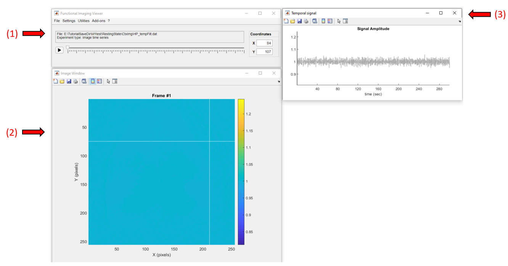
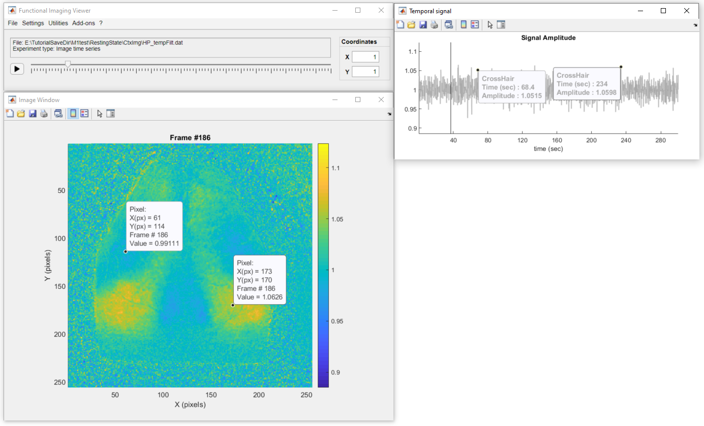

In this tutorial you will learn the basics of the DataViewer app to visualize and explore different types of imaging data. The DataViewer app open the following types of imaging data:
You can launch DataViewer from the main GUI or as a standalone from Matlab's command window.
In Matlab's command window, launch the main GUI:
umIToolbox('C:/FOLDER/projectfile.mat');
Go to the Visualization tab. Then select the object containing the file to be opened (step 1). In the Select a file: list box, select the file (step 2) - in this example, HP_tempFilt.dat. Finally, click on the app's button (step 3) to launch DataViewer:
To open an imaging file in DataViewer directly from Matlab's command window,launch DataViewer with the full path of the file as input:
DataViewer('C:/FOLDER/PROJECT_SAVEFOLDER/HP_tempFilt.dat');
Alternatively, launch the DataViewer app:
DataViewer
In DataViewer's main window, go to File >> Open and select the .dat file to open:

In this tutorial, we will explore an intermediate step from the preproceesing of a resting state experiment. The data stored in the file HP_tempFilt.dat consists of the fluorescence signal that was corrected for the hemodynamic artifacts, followed by the removal of the global signal variance and temporally filtered and normalized (check the tutorial on preprocessing data for resting state for details).
Below is a screenshot of the app with the data loaded. It consists of three windows: the main window (1), where all the options and controls are located, the image window (2) where the current frame of the data is shown, and the temporal signal window (3) where the temporal profile of the selected pixel is displayed.
Click on a pixel to get it's temporal profile:
To change frames, either move the slider in the main window or double-click on the plot from the temporal signal window:
Also, use the figure's datatip tool to add fixed data tips over the image or the temporal profile to show the pixel values as so:
Important
Don't forget to deactivate the datatip button before interacting with the figure. Some of the figure's interactions are suspended when the datatip mode is active.
Now, let's adjust the color scale limits to better visualize the fluctuations of the fluorescence signal across the mouse cortex. To do so you can simply use the vertical zoom option on the temporal signal window as so:
If you want to give a precise number, go to Settings >> Image Options and change the values of min and max. In addition, we can also change the default colormap through the Image Options:
Finally, we can use the playback button to display the "movie" of the fluorescence signal. This recording was obtained with a frame rate of 5Hz (default playback speed). We can change the playback speed in Settings >> Playback speed. Below, we can observe the fluctuations of the fluorescence signal across the mouse cortical areas (playback speed at 3 times the real frame rate):
The functional connectivity maps created in this tutorial were stored in the file SCPMap.dat. This data consists of a 3D array containing correlation values where each frame represents the correlation map for a given seed pixel.
When visualizing a correlation map, the behaviour of the image's crosshair is different from the other imaging data types. Here, when clicking on a pixel, the correlation map is updated to show the map from the selected pixel as the seed:
For images and image time series split by events, the DataViewer app shows an extra window, the Events window, containing the conditions and event repetitions. You can select one repetition or the average (#Average). The example below was drawn from the tutorial on preproceesing event-triggered data and it represents the normalized fluorescence signal of a whiskers stimulation split in 10 trials.